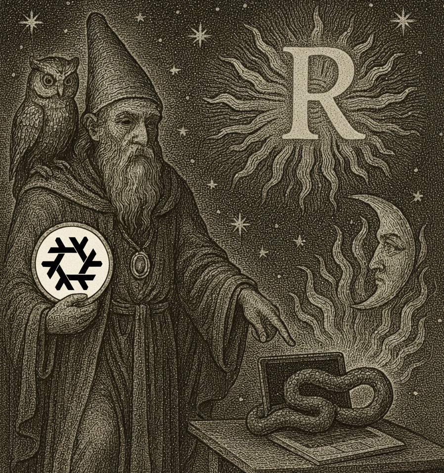
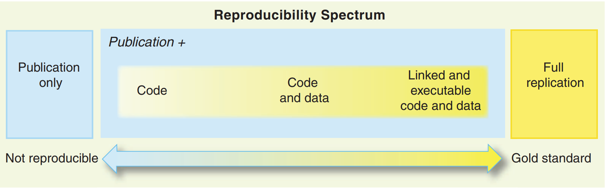

Building Reproducible Analytical Pipelines
Master of Data Science, University of Luxembourg - 2026
Introduction

This is the 2026 edition of the course. If you’re looking for earlier editions, you can find the 2024 and 2025 archives on GitHub.
What’s new in 2026:
- T at the center: A modern, domain-specific language purpose-built for polyglot reproducible analytical pipelines (R, Python, and Julia).
- Pipelines as pure function composition: Reframing pipelines through functional programming and Directed Acyclic Graphs (DAGs).
- Universal environment reproducibility: Using Nix as the foundation for bit-for-bit identical, cross-language software closures.
- AI-first workflow: Leveraging Large Language Models (LLMs) to construct and review reproducible pipelines and tests.
This course is based on my book Reproducible Polyglot Data Science.
Schedule
- 2026-10-30 (1.5 hours): Intro (Why T, the reproducibility spectrum) and Nix (environment reproducibility).
- 2026-11-11 (14:00 - 17:15, MSA 2.400): Building Pipelines with T (syntax, nodes, Arrow IPC serialization, DAG caching).
- 2026-11-19 (14:00 - 17:15, MSA 4.050): Pipelines as Function Composition (pure functions, immutability, state elimination).
- 2026-11-20 (10:15 - 11:45): Professional Workflows I: Testing and Test Oracles (unit testing with
{testthat}&pytest, golden datasets, pipeline assertions withtestcraft). - 2026-11-27 (14:00 - 17:15, MSA 3.190): Professional Workflows II: The AI Harness & Collaborative Git (code inspection literacy for LLM traps, authoring
AGENTS.md, closed-loop agent execution witht test --json, interactive Git withgit add -p). - 2026-12-03 (14:00 - 17:15, MNO 1.030): Packaging Code in R and Python for T pipelines.
- 2026-12-10 (14:00 - 17:15, MSA 3.120): Containerisation with Docker (spatial vs. temporal reproducibility, packaging Nix & T).
- 2026-12-16 (12:45 - 15:45, MSA 3.100): Continuous Integration with GitHub Actions & Course Project Wrap-up.
Reproducible analytical pipelines?
This course is my take on setting up code that results in some data product. This code has to be reproducible, documented, and production-ready. The term was originally introduced by the UK’s Analysis Function.
The basic idea of a reproducible analytical pipeline (RAP) is to have code that always produces the exact same result when run, whatever that result might be. This is crucial in research and science, but it is equally essential in industry and data-driven decision-making.
A well-documented RAP eliminates technical debt, prevents “it worked on my machine” disasters, and is readily reusable across future projects.
Why T? Focusing on what truly matters
If you have ever tried building a data science pipeline that combines both Python and R, you know the pain:
- In Python, you battle dependency hell across
pip,virtualenv,conda,poetry, anduv, while wrestling withPYTHONPATHresolution and platform-specific wheels. - In R, you configure
{renv}, ensure compiler toolchains exist to compile C/C++/Fortran packages, and manage package library paths. - To connect them, you end up writing fragile bash scripts or Makefiles, exporting ad-hoc CSV files that lose data types, and praying that everyone runs the scripts in the right order.
Students and practitioners end up wasting 80% of their time dealing with language-specific idiosyncrasies rather than learning reproducible architecture.
To break this cycle, this course puts T (tlang) at the center.
p = pipeline {
-- 1. Load data
data = read_csv("datasets/country_level_data.csv")
-- 2. Clean and derive in Python
derived = pyn(
command = <{
derived = data.assign(
pct_change = data["average_price_m2_nominal_euros"].pct_change() * 100
)
}>,
deserializer = ^ipc,
serializer = ^ipc
)
-- 3. Visualise in R
plot = rn(
command = <{
library(ggplot2)
plot <- ggplot(derived, aes(x = year, y = pct_change)) +
geom_line() +
theme_minimal()
}>,
deserializer = ^ipc
)
}
build_pipeline(p)The Pedagogical Justification
T is an experimental domain-specific language that I began designing in 2025. While it is experimental, placing it at the center of this course serves a vital pedagogical purpose:
- Focus on Reproducibility, Not Language Quirks: T isolates the essential principles of software reproducibility:
- Pure Functions: Each node is an isolated function with explicit inputs and a single output.
- Directed Acyclic Graphs (DAGs): Execution order is derived mathematically from data dependencies, not the arbitrary layout of script files or notebook cells.
- Hermetic Execution: Execution takes place inside an isolated sandbox guaranteed by Nix.
- Content-Addressed Caching: Only nodes whose inputs or code have changed get rebuilt.
- Zero-Glue Polyglot Data Exchange: Cross-language data transfer uses standardized formats like Apache Arrow IPC (
^ipc), passing DataFrames between Python, R, and Julia without custom serialization code.
- Eliminating Fragile Glue: You no longer need to write custom glue scripts, parse command-line arguments, or track intermediate file names.
- Designed for the LLM Era: T was created with a minimalist, constraint-based syntax that LLMs can generate and reason about with high precision. You can let an LLM help write the pipeline definitions, while you and the LLM focus on the R or Python data analysis code inside each node.
By abstracting execution into T and environment management into Nix, we remove the accidental complexity of modern data science so you can master the fundamental concepts.
Data products?
In this course, each of you will develop a data product. A data product is anything that requires data as an input and produces value: an analytical report, a reproducible paper, an interactive dashboard, or an API.
The focus of the course is not on the end product itself (which you can choose based on your interests), but on the pipeline that builds that product reliably, reproducibly, and non-interactively.
Machine learning?
Being skilled in machine learning is not enough to become an effective data scientist. In fact, the model is often the easiest piece to replace. What is non-negotiable is knowing:
- How to write, test, and modularize code;
- How to manage environments deterministically;
- How to work within the command line and version control with Git;
- How to construct automated DAG pipelines;
- How to package code and deploy with Docker and Continuous Integration.
What actually is reproducibility?
A project is reproducible if it can be rerun by anyone, anywhere, at any point in time, yielding the exact same results with minimal friction.
The requirements of a RAP
For a project to qualify as a RAP, it must meet several strict criteria: - Available, version-controlled source code (tracked with Git and GitHub); - Deterministic dependencies (managed completely with Nix); - Non-interactive execution (run with a single command, without manual steps in GUIs or notebooks); - Tested logic (unit tests validating functions and pipeline data contracts); - Open-source foundation (reproducible operating system closures via Nix and Docker).
The Reproducibility Spectrum
Reproducibility is not binary; it exists along a continuum (Peng 2011):

A project can control for: 1. Code only; 2. Code + language versions; 3. Code + language + package libraries; 4. Code + packages + system-level OS dependencies (Nix / Docker); 5. Hardware architecture and bit-for-bit hermetic closures.
In this course, we aim for the highest practical tier of this spectrum.
Large Language Models & AI Coding Agents
LLMs and agentic coding workflows have transformed how software is developed. In this course, we treat LLMs as power tools: they are highly encouraged for drafting functions, generating tests, and structuring pipelines. However, using an LLM requires you to become a rigorous code reviewer. You will learn how to use Git’s interactive staging (git add -p) and automated test suites to verify that AI-generated code meets your exact expectations before committing it.
Setting Up an AI Agent
It is important that you have an AI coding agent installed on your computer system for this course.
When setting up your environment, consider the following options:
- University-provided tools: First, check if your university provides access to an AI coding assistant or institutional accounts (for example, through GitHub Education / Student Developer Pack for GitHub Copilot, or campus AI services).
- Personal accounts: If you already have a personal account or subscription to a coding agent or AI model provider (such as Claude Code, Cursor, GitHub Copilot, or API keys for models like Claude, GPT, or Gemini), you are welcome to use it.
- Freebuff: If you do not have an institutional license or personal subscription, you can use Freebuff. Freebuff provides free, ad-supported access to DeepSeek 4.1 for 7 hours a day, which is a very good deal for completing your coursework.
- OpenCode: Another option is OpenCode, which also provides free models. Keep in mind that free models on OpenCode typically come with smaller context windows, and sessions might be shorter.
Prerequisites
- Basic programming familiarity with R or Python (loops, functions, data structures).
- Familiarity with the command line interface (CLI).
- Linux or macOS operating system (Windows users must use WSL2).
- An AI coding agent installed on your computer system (see above).
Course Project & Grading
Grading is based on your final course project. During lecture hours you will learn each concept through live demonstrations and hands-on exercises. In parallel, you will develop your own reproducible analytical pipeline around a substantial analytical problem and dataset of your choice.
Because you are actively encouraged to use AI coding agents to accelerate your development, the goal of this project is not merely to write boilerplate code. Instead, the ambition is to tackle a challenging, multi-language analytical problem and demonstrate your skills as a harness architect, code reviewer, and reproducibility engineer.
Project Scope & Ambition
To achieve a high grade, your project must meet the following specifications:
- Polyglot Mandate: The pipeline must integrate at least two languages (e.g., Python + R, or Python + Julia) orchestrated with T and exchanging data via Apache Arrow IPC (
^ipc). Each language must be chosen deliberately for its strengths (e.g., Python for data scraping or machine learning embeddings, R for specialized statistical modeling and{ggplot2}visualization, or Julia for high-performance simulation). - Non-Trivial DAG Architecture: The pipeline cannot be a single linear sequence of scripts. It must feature a branched Directed Acyclic Graph (DAG) with at least 5 distinct computation nodes (e.g., ingesting multiple data sources, parallel feature transformations, model fitting, and validation).
- Pure Functions & Immutability: All node computations must be pure functions with explicit inputs and outputs, free of global scope leakage, in-place data mutations, or unmanaged side effects.
- The AI Harness & Test Oracles: The repository must include a customized
AGENTS.mdspecifying your project’s negative constraints, paired with an automated test suite (pytest,{testthat}, ortestcraft) anchored by golden reference datasets. Tests must verify analytical invariants and prevent LLM-generated bugs. - Hermetic Environment: All dependencies (R, Python, Julia, system libraries, and Quarto) must be declared and pinned via a Nix flake (
flake.nixandflake.lock). - Continuous Integration: The repository must contain a GitHub Actions workflow that executes your test suite and builds the pipeline in a clean Nix environment on every push.
- Final Data Product: The pipeline must produce an automated, polished end product—such as a rendered Quarto report, an interactive dashboard, or an exported analytical artifact.
Grading Rubric (20 Points)
At the end of the semester, your repository will be evaluated across four dimensions (5 points each):
| Dimension | Points | Criteria & Evaluation |
|---|---|---|
| 1. Polyglot Architecture & T Pipeline | 5 | Pipeline orchestrates \(\ge 2\) languages via T with Apache Arrow IPC (^ipc). Computation nodes are pure functions without side effects or in-place mutations. DAG caching works correctly (unchanged nodes are skipped on rebuilds). |
| 2. The AI Harness & Test Oracles | 5 | Includes a project-specific AGENTS.md with explicit negative constraints. Test suite (t test --json, pytest, or testthat) includes rigorous test oracles / golden datasets. Code is clean and free of AI semantic traps (no silent error suppression, no float ==, no leaky globals). |
| 3. Deterministic Environment & CI | 5 | Dependencies are declared in flake.nix and pinned in flake.lock. A GitHub Actions workflow passes cleanly on every push, building and testing the project non-interactively without manual intervention. |
| 4. Problem Complexity & Data Product | 5 | Tackles a non-trivial, interesting analytical question. Produces a polished final data product (e.g., Quarto document). Repository has an exemplary README.md explaining the DAG architecture, data flow, and instructions to reproduce. |
Evaluation Protocol
Your repository will be evaluated objectively and non-interactively:
- The “One-Command” Test: The instructor clones your repository and runs the Nix build command (or verifies the green status of your GitHub Actions CI). If the pipeline fails to build from scratch or requires imperative manual steps, marks are deducted immediately.
- Harness & Oracle Inspection: The instructor reviews your
AGENTS.mdand test suite to verify that your test assertions are genuine analytical oracles rather than trivial tautologies. - Diff & Code Quality Review: The instructor reviews the code inside your pipeline nodes to verify that functions are pure, properly scoped, and that AI-generated artifacts have been rigorously audited.
Jargon
T
- T (
tlang): A domain-specific language for defining reproducible analytical pipelines across R, Python, and Julia. - Node: A single computation step in a pipeline. Nodes act as pure functions: they take explicit inputs and produce a single serialized artifact.
rn()/pyn()/jln(): T node constructors for R, Python, and Julia runtimes.- Serializer / Deserializer: The mechanism T uses to write and read node outputs (e.g.,
^ipcfor Apache Arrow,^csv,^parquet,^rds). - Pipeline (
pipeline { ... }): A declarative block that defines the DAG of nodes and their data dependencies. build_pipeline(): The function that compiles the DAG, checks the cache, and executes stale nodes in dependency order.read_node(): A function used to inspect the cached output of a specific node interactively.
Nix
- Nixpkgs: The central repository of over 120,000 packages used by Nix.
- Derivation: A low-level, cryptographic build instruction in Nix.
- Nix Store (
/nix/store): The read-only directory where all isolated packages and build artifacts reside. - Hermetic Sandbox: An isolated build environment with no network access or hidden system dependencies.
- Binary Cache: Pre-built packages identified by cryptographic hash (e.g. Cachix or
cache.nixos.org), avoiding redundant local compilation.
R & Python
- CRAN / PyPI: The respective package registries for R and Python.
- Arrow IPC (
^ipc): An in-memory columnar data format that allows zero-overhead data transfer between R and Python. testthat/pytest: Standard testing frameworks for R and Python code.
Further Reading
License
This course is licensed under the WTFPL.